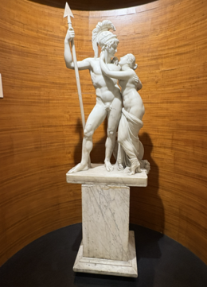

Audio Explanation
Venus and Mars (War and Peace)

শুক্র ও মঙ্গল (XLV - 161) (যুদ্ধ ও শান্তি) * এই ভাস্কর্যে মার্সকে বর্শা ও শিরস্ত্রাণ পরিহিত অবস্থায় দেখানো হয়েছে, যার মাধ্যমে বোঝা যায় যে তিনি যুদ্ধের দেবতা। ভেনাস হলেন প্রেম, সৌন্দর্য ও উর্বরতার রোমান দেবী। মার্সের পাশে ভেনাসকে দাঁড়ালে মার্সকে অনেক বেশি শান্ত ও কম ক্রুদ্ধ মনে হয়। এটি প্রমাণ করে যে প্রেম যুদ্ধকে নিয়ন্ত্রণ করতে এবং সহিংসতা কমাতে পারে। ভেনাস তাঁর পাশে স্নিগ্ধভাবে দাঁড়িয়ে আছেন, যা শান্তি ও মমত্ববোধের প্রতীক। তাঁর শরীর আংশিকভাবে বস্ত্রে আবৃত, যা ধ্রুপদী শিল্পকলায় সৌন্দর্য ও শালীনতার বহিঃপ্রকাশ। এই ভাস্কর্যটি আমাদের শেখায় যে ক্রোধের চেয়ে প্রেম অধিক শক্তিশালী। এটি আরও দেখায় যে শান্তি ও শক্তি পাশাপাশি অবস্থান করতে পারে। প্রেম ও ক্ষমতার মধ্যে ভারসাম্য থাকলে পৃথিবীতে সম্প্রীতি বজায় থাকে।
Venus and Mars (War and Peace)
शुक्र और मंगल (XLV - 161) (युद्ध और शांति) * इस मूर्ति में मंगल को भाला और टोपी (हेलमेट) धारण किए हुए दिखाया गया है, जिससे स्पष्ट होता है कि वे युद्ध के देवता हैं। शुक्र प्रेम, सौंदर्य और उर्वरता की रोमन देवी हैं। जब शुक्र मंगल के निकट खड़ी होती हैं, तो मंगल अधिक शांत और कम क्रोधित दिखाई देते हैं। यह दर्शाता है कि प्रेम युद्ध को नियंत्रित कर सकता है और हिंसा को कम कर सकता है। शुक्र उनके पास सौम्यता से खड़ी हैं, जो शांति और करुणा का प्रतीक है। उनके शरीर का कुछ भाग वस्त्र से ढका हुआ है, जो शास्त्रीय कला में सौंदर्य और शालीनता को दर्शाता है। यह मूर्ति हमें बताती है कि प्रेम क्रोध से अधिक शक्तिशाली है। यह भी दर्शाती है कि शांति और शक्ति एक साथ अस्तित्व में रह सकती हैं। जब प्रेम और शक्ति के बीच संतुलन होता है, तो संसार में सामंजस्य स्थापित हो सकता है।
Venus and Mars (War and Peace)
ಶುಕ್ರ ಮತ್ತು ಮಂಗಳ (XLV-161) (ಯುದ್ಧ ಮತ್ತು ಶಾಂತಿ) * ಈ ಶಿಲ್ಪಕಲಾಕೃತಿಯಲ್ಲಿ, ಮಾರ್ಸ್ (ಮಂಗಳ) ದೇವನನ್ನು ಈಟಿ ಮತ್ತು ಶಿರಸ್ತ್ರಾಣದೊಂದಿಗೆ ತೋರಿಸಲಾಗಿದ್ದು, ಇದರಿಂದ ಆತನು ಯುದ್ಧದ ದೇವನೆಂದು ನಮಗೆ ತಿಳಿಯುತ್ತದೆ. ವೀನಸ್ (ಶುಕ್ರ) ಪ್ರೀತಿ, ಸೌಂದರ್ಯ ಮತ್ತು ಫಲವತ್ತತೆಯ ರೋಮನ್ ದೇವತೆಯಾಗಿದ್ದಾಳೆ. ವೀನಸ್ ಮಾರ್ಸ್ನ ಹತ್ತಿರ ನಿಂತಾಗ, ಆತನು ಹೆಚ್ಚು ಪ್ರಶಾಂತವಾಗಿ ಮತ್ತು ಕಡಿಮೆ ಕೋಪದಲ್ಲಿರುವಂತೆ ಕಾಣಿಸುತ್ತಾನೆ. ಪ್ರೀತಿಯು ಯುದ್ಧವನ್ನು ನಿಯಂತ್ರಿಸಬಲ್ಲದು ಮತ್ತು ಹಿಂಸೆಯನ್ನು ಕಡಿಮೆ ಮಾಡಬಲ್ಲದು ಎಂಬುದನ್ನು ಇದು ಚಿತ್ರಿಸುತ್ತದೆ. ವೀನಸ್ ಆತನ ಪಕ್ಕದಲ್ಲಿ ಸೌಮ್ಯವಾಗಿ ನಿಂತಿದ್ದು, ಶಾಂತಿ ಮತ್ತು ದಯೆಯನ್ನು ಪ್ರದರ್ಶಿಸುತ್ತಾಳೆ. ಆಕೆಯು ಭಾಗಶಃ ಬಟ್ಟೆಯಿಂದ ಮುಚ್ಚಲ್ಪಟ್ಟಿದ್ದು, ಇದು ಶಾಸ್ತ್ರೀಯ ಕಲೆಯಲ್ಲಿ ಸೌಂದರ್ಯ ಮತ್ತು ವಿನಯವನ್ನು ಪ್ರದರ್ಶಿಸುತ್ತದೆ. ಕೋಪಕ್ಕಿಂತ ಪ್ರೀತಿಯೇ ಶಕ್ತಿಶಾಲಿ ಎಂಬುದನ್ನು ಈ ಶಿಲ್ಪವು ನಮಗೆ ತಿಳಿಸುತ್ತದೆ. ಇದು ಶಾಂತಿ ಮತ್ತು ಶಕ್ತಿ ಎರಡೂ ಒಟ್ಟಿಗೆ ಇರಬಲ್ಲವು ಎಂಬುದನ್ನೂ ತೋರಿಸುತ್ತದೆ. ಪ್ರೀತಿ ಮತ್ತು ಅಧಿಕಾರಗಳು ಸಮತೋಲನದಲ್ಲಿದ್ದಾಗ, ಜಗತ್ತಿನಲ್ಲಿ ಸಾಮರಸ್ಯವಿರಲು ಸಾಧ್ಯ ಎಂಬುದನ್ನು ಈ ಕಲಾಕೃತಿ ಪ್ರದರ್ಶಿಸುತ್ತದೆ.
Venus and Mars (War and Peace)
വീനസും മാര്സും (XLV-161) (യുദ്ധവും സമാധാനവും) ഈ ശില്പത്തിൽ മാർസിനെ ഒരു കുന്തവും ശിരോവസ്ത്രവും ധരിച്ചാണ് കാണിച്ചിരിക്കുന്നത്, അതിനാൽ അദ്ദേഹം യുദ്ധത്തിന്റെ ദൈവമാണെന്ന് നമുക്ക് മനസ്സിലാകാം. റോമൻ പുരാണപ്രകാരമുള്ള സ്നേഹം, സൗന്ദര്യം, ഫലപുഷ്ടി എന്നിവയുടെ ദേവതയാണ് വീനസ്. വീനസ് മാർസിന് അരികിൽ നിൽക്കുമ്പോൾ, അദ്ദേഹത്തിന് കൂടുതൽ ശാന്തതയും കോപം കുറഞ്ഞ മുഖവുമാണ് ഉള്ളത്. സ്നേഹത്തിന് യുദ്ധത്തെ നിയന്ത്രിക്കാനും അക്രമം കുറയ്ക്കാനും കഴിയുമെന്ന് ഇത് കാണിക്കുന്നു. വീനസ് അദ്ദേഹത്തിന് അരികിൽ ശാന്തമായി നിൽക്കുന്നത് സമാധാനത്തെയും ദയയെയും സൂചിപ്പിക്കുന്നു. ക്ലാസിക്കൽ കലയിൽ സൗന്ദര്യത്തിന്റെ യും ലജ്ജയുടെയും പ്രതീകമായി അവൾ ഭാഗികമായി വസ്ത്രം ധരിച്ചിരിക്കുന്നു. കോപത്തേക്കാൾ ശക്തമാണ് സ്നേഹമെന്ന് ഈ ശില്പം നമ്മോട് പറയുന്നു. സമാധാനത്തിനും ശക്തിക്കും ഒരുമിച്ച് നിലനിൽക്കാൻ കഴിയുമെന്നും ഇത് വ്യക്തമാക്കുന്നു. സ്നേഹവും അധികാരവും തുലനം ചെയ്യപ്പെടുമ്പോൾ ലോകത്ത് ഐക്യം ഉണ്ടാകാം.
Venus and Mars (War and Peace)
ଭେନସ୍ ଏବଂ ମାର୍ସ (XLV-161) (ଯୁଦ୍ଧ ଏବଂ ଶାନ୍ତି) ଆସନ୍ତୁ, ଏହି ଗୁରୁତ୍ୱପୂର୍ଣ୍ଣ ମାର୍ବଲ ମୂର୍ତ୍ତିଟିକୁ ନିକଟରୁ ଦେଖିବା—ଏହା ହେଉଛି 'ଭେନସ୍ ଏବଂ ମାର୍ସ', ଯାହାକୁ 'ଯୁଦ୍ଧ ଏବଂ ଶାନ୍ତି'ର ପ୍ରତୀକ ବୋଲି ମଧ୍ୟ କୁହାଯାଏ। ଆପଣ ଯଦି ଏହି ମୂର୍ତ୍ତିଟିକୁ ଭଲ କରି ଲକ୍ଷ୍ୟ କରିବେ, ତେବେ ଦେଖିବେ ଯେ ମାର୍ସଙ୍କ ହାତରେ ଏକ ବର୍ଚ୍ଛା ଏବଂ ମସ୍ତକରେ ଶିରସ୍ତ୍ରାଣ ରହିଛି, ଯାହା ସୂଚାଉଛି ଯେ ସେ ହେଉଛନ୍ତି ରୋମାନ୍ ପୁରାଣର ଯୁଦ୍ଧର ଦେବତା। ଅନ୍ୟପଟେ, ତାଙ୍କ ପାଖରେ ଛିଡ଼ା ହୋଇଥିବା ଭେନସ୍ ହେଉଛନ୍ତି ପ୍ରେମ, ସୌନ୍ଦର୍ଯ୍ୟ ଏବଂ ଉର୍ବରତାର ଦେବୀ। ଏଠାରେ ଏକ ଅଦ୍ଭୁତ ଭାବପ୍ରବଣତା ଦେଖିବାକୁ ମିଳେ—ଯୁଦ୍ଧର ଦେବତା ମାର୍ସଙ୍କ ନିକଟରେ ଯେତେବେଳେ ପ୍ରେମର ଦେବୀ ଭେନସ୍ ଛିଡ଼ା ହୁଅନ୍ତି, ସେତେବେଳେ ମାର୍ସଙ୍କ ଚେହେରା ଅତ୍ୟନ୍ତ ଶାନ୍ତ ଓ କ୍ରୋଧହୀନ ଦେଖାଯାଏ। ଏହା ଦର୍ଶାଉଛି ଯେ ପ୍ରେମ କିପରି ଯୁଦ୍ଧର ଉଗ୍ରତାକୁ ନିୟନ୍ତ୍ରଣ କରିପାରେ ଏବଂ ହିଂସାକୁ ପ୍ରଶମିତ କରିପାରେ। ଭେନସ୍ ଅତ୍ୟନ୍ତ ସୌମ୍ୟ ଓ ସ୍ନେହପୂର୍ଣ୍ଣ ଭଙ୍ଗୀରେ ତାଙ୍କ ପାଖରେ ଛିଡ଼ା ହୋଇ ଶାନ୍ତି ଓ କରୁଣାର ବାର୍ତ୍ତା ଦେଉଛନ୍ତି। ତାଙ୍କ ଶରୀରରେ ଆଂଶିକ ବସ୍ତ୍ରର ଆଚ୍ଛାଦନ ପ୍ରାଚୀନ କଳାର ସୌନ୍ଦର୍ଯ୍ୟ ଏବଂ ଶାଳୀନତାକୁ ସୂଚାଉଛି। ଏହି ଭାସ୍କର୍ଯ୍ୟଟି ଆମକୁ ଏକ ଗଭୀର ସନ୍ଦେଶ ଦିଏ—କ୍ରୋଧ ଅପେକ୍ଷା ପ୍ରେମ ସବୁବେଳେ ଅଧିକ ଶକ୍ତିଶାଳୀ। ଏହା ମଧ୍ୟ ଦର୍ଶାଏ ଯେ ଶାନ୍ତି ଏବଂ ଶକ୍ତି ଏକାଠି ରହିପାରନ୍ତି। ଯେତେବେଳେ ସଂସାରରେ ପ୍ରେମ ଏବଂ ଶକ୍ତି ମଧ୍ୟରେ ସଠିକ୍ ସନ୍ତୁଳନ ରହେ, ସେତେବେଳେ ବିଶ୍ୱରେ ସୌହାର୍ଦ୍ଦ୍ୟ ଓ ଶାନ୍ତି ପ୍ରତିଷ୍ଠା ହୁଏ।
Venus and Mars (War and Peace)
வீனஸ் மற்றும் மார்ஸ் (XLV-161) ((போர் மற்றும் அமைதி) இச்சிற்பத்தில், மார்ஸ் ஈட்டி மற்றும் தலைக்கவசத்துடன் சித்தரிக்கப்பட்டுள்ளார்; எனவே அவர் போர்க்கடவுள் என்பது நமக்குத் தெரிகிறது. வீனஸ் என்பவர் காதல், அழகு மற்றும் வளமைக்கான ரோமானியத் தெய்வம் ஆவார். வீனஸ் மார்ஸுக்கு அருகில் நிற்கும்போது, மார்ஸ் அமைதியாகவும் குறைவான கோபத்துடனும் காணப்படுகிறார். காதல் போரைக் கட்டுப்படுத்தவும் வன்முறையைக் குறைக்கவும் வல்லது என்பதை இது காட்டுகிறது. வீனஸ் அவருக்கு அருகில் மென்மையாக நின்று, அமைதியையும் கனிவையும் வெளிப்படுத்துகிறார். அவர் உடலின் ஒரு பகுதியை ஆடை மூடியுள்ளது. இது செவ்வியல் கலைப்பாணியில் அழகையும் நாணத்தையும் வெளிப்படுத்தும் அம்சமாகக் கருதப்படுகிறது. கோபத்தை விடக் காதல் வலிமையானது என்பதை இச்சிற்பம் நமக்கு உணர்த்துகிறது. அமைதியும் வலிமையும் இணைந்து இருக்க முடியும் என்பதையும் இது காட்டுகிறது. காதலும் ஆற்றலும் சமநிலையில் இருக்கும்போது, உலகில் நல்லிணக்கம் நிலவும்.
Venus and Mars (War and Peace)
శుక్రుడు మరియు అంగారకుడు (XLV-161) (యుద్ధం మరియు శాంతి) * ఈ శిల్పంలో, అంగారక గ్రహం ఈటె మరియు శిరస్త్రాణంతో చూపబడింది, కాబట్టి అతను యుద్ధ దేవుడు అని మనకు తెలుసు. శుక్రుడు ప్రేమ, అందం మరియు సంతానోత్పత్తికి రోమన్ దేవత. శుక్రుడు అంగారక గ్రహానికి దగ్గరగా నిలబడినప్పుడు, అతను ప్రశాంతంగా మరియు తక్కువ కోపంగా కనిపిస్తాడు. ప్రేమ యుద్ధాన్ని నియంత్రించగలదని మరియు హింసను తగ్గిస్తుందని ఇది తెలియజేస్తుంది. శుక్రుడు శాంతి మరియు దయ చూపిస్తూ అతని పక్కన సున్నితంగా నిలబడి ఉంటాడు. ఆమె పాక్షికంగా వస్త్రంతో కప్పబడి ఉంది, ఇది శాస్త్రీయ కళలో అందం మరియు వినయాన్ని చూపిస్తుంది. కోపం కంటే ప్రేమ బలంగా ఉందని శిల్పం చెబుతుంది. ప్రేమ మరియు శక్తి సమతుల్యం అయినప్పుడు, ప్రపంచంలో సామరస్యం ఉంటుంది.
Venus and Mars (War and Peace)
زہرہ اور مریخ (XLV-161) (جنگ اور امن) اس مجسمے میں مریخ کو نیزہ اور حفاظتی خود کے ساتھ دکھایا گیا ہے، جس سے معلوم ہوتا ہے کہ وہ جنگ کا دیوتا ہے۔ وینس محبت، خوب صورتی اور زرخیزی کی رومی دیوی ہے۔ جب وینس مریخ کے قریب کھڑی ہوتی ہے تو مریخ زیادہ پُرسکون اور کم غصے میں نظر آتا ہے۔ اس سے ظاہر ہوتا ہے کہ محبت جنگ پر قابو پا سکتی ہے اور تشدد کو کم کر سکتی ہے۔ وینس اس کے ساتھ نرمی سے کھڑی ہے، جو امن اور مہربانی کی علامت ہے۔ وہ جزوی طور پر لباس میں ڈھکی ہوئی ہے، جو کلاسیکی فن میں خوب صورتی اور شائستگی کو ظاہر کرتا ہے۔ یہ مجسمہ ہمیں بتاتا ہے کہ محبت غصے سے زیادہ طاقت ور ہوتی ہے۔ جب محبت اور طاقت میں توازن ہو تو دنیا میں ہم آہنگی پیدا ہو سکتی ہے۔
Venus and Mars (War and Peace)
शुक्र आणि मंगळ (XLV-161) या शिल्पात मार्सला भाला आणि शिरस्त्राणासह दाखवले आहे, त्यामुळे आपल्याला माहीत आहे की तो युद्धाचा देव आहे. व्हीनस ही प्रेम, सौंदर्य आणि सुपीकतेची रोमन देवी आहे. जेव्हा व्हीनस मार्सच्या जवळ उभी राहते, तेव्हा तो अधिक शांत आणि कमी संतापलेला दिसतो. हे दर्शवते की प्रेम युद्धावर नियंत्रण ठेवू शकते आणि हिंसाचार कमी करू शकते. व्हीनस त्याच्या शेजारी हळुवारपणे उभी आहे, जी शांतता आणि दयाळूपणा दर्शवते. ती अंशतः कपड्याने झाकलेली आहे, जे शास्त्रीय कलेमध्ये सौंदर्य आणि विनयशीलता दर्शवते. हे शिल्प आपल्याला सांगते की प्रेम रागापेक्षा बलवान आहे. हे असेही दर्शवते की शांतता आणि सामर्थ्य एकत्र अस्तित्वात असू शकतात. जेव्हा प्रेम आणि शक्ती संतुलित असतात, तेव्हा जगात सुसंवाद असू शकतो.
Venus and Mars (War and Peace)
વીનસ અને માર્સ - યુદ્ધ અને શાંતિ (XLV-161) આ શિલ્પમાં માર્સને ભાલા અને હેલમેટ સાથે દર્શાવવામાં આવ્યો છે, જેથી આપણે જાણી શકીએ કે તે યુદ્ધનો દેવતા છે. વીનસ એ પ્રેમ, સૌંદર્ય અને પ્રજનન શક્તિની રોમન દેવી છે. જ્યારે વીનસ માર્સની નજીક ઊભી રહે છે, ત્યારે તે વધુ શાંત અને ઓછા ગુસ્સાવાળા દેખાય છે. આ દર્શાવે છે કે પ્રેમ યુદ્ધને નિયંત્રિત કરી શકે છે અને હિંસા ઘટાડી શકે છે. વીનસ શાંતિ અને દયા દર્શાવતા તેની બાજુમાં નરમાશથી ઊભી છે. તે આંશિક રીતે વસ્ત્રથી ઢંકાયેલી છે, જે શાસ્ત્રીય કલામાં સૌંદર્ય અને વિનમ્રતા દર્શાવે છે. આ શિલ્પ આપણને કહે છે કે પ્રેમ ગુસ્સા કરતાં વધુ શક્તિશાળી છે. તે એ પણ દર્શાવે છે કે શાંતિ અને શક્તિ એકસાથે અસ્તિત્વ ધરાવી શકે છે. જ્યારે પ્રેમ અને સત્તા સંતુલિત હોય છે, ત્યારે સંસારમાં સુમેળ રહી શકે છે.